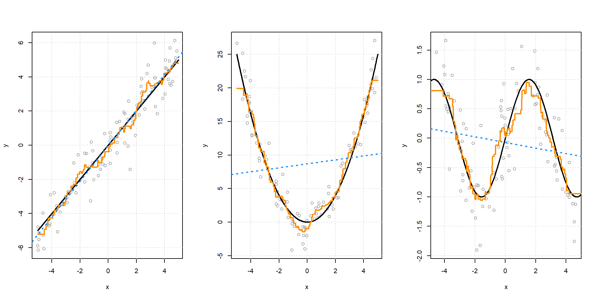

library(readr)
Advertising = read_csv("Advertising.csv")12 Регрессионный анализ в R
12.1 Основы линейной регрессии
На предыдущих занятиях мы изучили основные типы и структуры данных, овладели основами создания простых функций на R, научились импортировать и экспортировать данные в разных форматах. Мы уже умеем проводить различные трансформации данных, визуализировать данные разного типа и проводить одномерный и двумерный анализ на категориальных данных. Мы даже справились со сложной задачей анализа данных с помощью метода главных компонент и анализа соответствий.
Мы продолжаем изучать многомерные методы, и следующий на очереди - регрессионный анализ и его отдельные разновидности.
В обобщенном виде уравнение регрессионного анализа может быть представлено как:
\[Y=X\beta+\epsilon,\]
где \(Y\) - вектор значений зависимой переменной, \(X\) - матрица значений независимых переменных (предикторов), \(\beta\) - вектор коэффициентов регрессии, используемых для подгонки к известным значениям зависимой переменной, \(\epsilon\) - ошибки модели (остатки, разница между реальными и предсказанными значениями).
Преимуществами и причинами популярности регрессионного анализа являются следующие:
- регрессионные модели могут включать множество предикторов одновременно, что позволяет оценивать вклад каждого при условии контроля над остальными параметрами;
- существует большое количество разновидностей регрессионного анализа, могут использоваться различные типы предикторов и зависимых переменных;
- довольно легко интерпретировать результаты;
- достаточно просты в применении и не слишком сложны с математической точки зрения.
Чаще всего используются следующие виды регрессионного анализа:
- линейная регрессия (зависимая переменная числовая)
- логистическая регрессия (зависимая переменная бинарная)
- порядковая регрессия (зависимая переменная - упорядоченная факторная)
- мультиномиальная регрессия (зависимая переменная категориальная)
12.1.1 Загрузка данных
В качестве практического примера мы будем использовать учебный набор данных о взаимосвязи между объемами продаж и затратами на рекламу. Это небольшой набор, который поможет понять основные идеи метода и его различные реализации.
Как всегда, мы начинаем с загрузки данных. Данные будут доступны в приложении к занятию.
После загрузки данных в R, первым делом нужно посмотреть сами данные, их структуру. Поскольку мы использовали функцию read_csv(), данные были загружены в формате tibble (tbl_df). Это практически датафрейм, вернее его усовершенствованная версия, в которой данные обрабатываются быстрее, и не происходит некоторых неприятных трансформаций (например, не меняются типы и имена данных).
Мы видим, что у нас всего 200 наблюдений и 4 переменных типа double (числовой формат, в котором происходит более точное округление десятичных знаков до 16 знаков после запятой - с 64-битной, то есть двойной точностью).
В нашем наборе переменная Sales (Продажи) будет являться зависимой переменной, и мы будем пытаться выявить взаимосвязи между продажами и тремя другими - независимыми переменными: TV, Radio, и Newspaper, обозначающими, соответственно, затраты на рекламу на телевидении, радио и в газетах.
12.1.2 Предварительная визуализация данных
После рассмотрения структуры данных, следующий шаг - это визуализация. Поскольку у нас только количественные (не категориальные) переменные, лучший способ их представить - это диаграммы рассеяния, которые мы можем сделать для каждого индивидуального предиктора.
Например, для рекламы на телевидении
plot(Sales ~ TV, data = Advertising, col = "dodgerblue", pch = 20, cex = 1.5,
main = "Продажи vs Реклама на телевидении")Самостоятельная работа: сделайте аналогичные графики для других переменных.
Чтобы сделать все графики сразу, можно воспользоваться функцией `pairs().
pairs(Advertising)Часто нам интересно посмотреть взаимосвязи только между зависимой переменной и предиктором, а функция pairs() выдает много лишнего.
Функция featurePlot() из библиотеки caret (Classification And REgression Training), подходит для этой цели гораздо лучше.
library(caret)
featurePlot(x = Advertising[ , c("TV", "Radio", "Newspaper")], y = Advertising$Sales)Мы видим, что есть явный рост продаж по мере увеличения рекламы на радио и телевидении, тогда как связь с рекламой в газетах не так очевидна.
12.1.3 Проставя линейная регрессия и функция lm()
Давайте построим простую линейную модель для продаж, в которой в качестве предиктора будут выступать затраты на телевизионную рекламу.
mod_1 = lm(Sales ~ TV, data = Advertising)12.1.3.1 Общие результаты и тестирование гипотез
Функция summary() позволяет вывести на экран информацию о модели, полученную с помощью функции lm(), которая может быть полезной для тестирования гипотез, касающихся предикторов и оценки значимости регрессионных коэффициентов.
summary(mod_1)
Call:
lm(formula = Sales ~ TV, data = Advertising)
Residuals:
Min 1Q Median 3Q Max
-8.3860 -1.9545 -0.1913 2.0671 7.2124
Coefficients:
Estimate Std. Error t value Pr(>|t|)
(Intercept) 7.032594 0.457843 15.36 <2e-16 ***
TV 0.047537 0.002691 17.67 <2e-16 ***
---
Signif. codes: 0 '***' 0.001 '**' 0.01 '*' 0.05 '.' 0.1 ' ' 1
Residual standard error: 3.259 on 198 degrees of freedom
Multiple R-squared: 0.6119, Adjusted R-squared: 0.6099
F-statistic: 312.1 on 1 and 198 DF, p-value: < 2.2e-16Давайте разбираться!
Вывод начинается с повторения регрессионного уравнения под заголовком Call: lm(formula = Sales ~ TV, data = Advertising).
Затем в модели приводится распределение остатков. Остатки должны иметь нормальное распределение с абсолютными значениями минимума и максимума, также как и квартилями очень близкими друг к другу, что предполагает их примерно одинаковое расстояние от центра распределения.
В нашем случае это правило выполняется.
Следующая часть вывода содержит таблицу с коэффициентами.
Чтобы понять, что они означают и каким образом получаются, приведем формулу регрессии, но для случая с одной переменной:
\[y_i=\alpha+\beta x_i+\varepsilon_i,\]
где \(y\) - зависимая переменная, \(i\) - единица анализа, \(\alpha\) - интерцепт (константа), \(\beta\) - коэффициент регрессии, \(x\) - независимая переменная и \(\varepsilon\) - ошибка.
Когда мы работаем с выборочными данными, формула изменяется, так как вместо истинных значений у нас будут оценки:
\[\hat{y}=\hat{\alpha}+\hat{\beta}x\]
Оценка для интерцепта (\(\alpha\)) - значение \(y\) когда \(x = 0\). В геометрическом смысле это точка пересечения регрессионной прямой с осью \(OY\). Иногда интерцепт может иметь смысл и подлежит интерпретации, но часто он может принимать несуществующие значения, выходящие за рамки возможных значений переменных, не описывается и не интерпретируется (допустим, мы пытаемся выявить зависимость веса от роста, получается, что интерцепт нам покажет, чем равен вес, когда рост равен нулю, что не имеет смысла).
В нашем примере интерцепт - это среднее значение продаж при нулевых затратах на рекламу.
Далее следуют коэффициенты для предикторов. Для каждого предиктора коэффициент обозначает ожидаемое изменение в зависимой переменной при изменении предиктора на одну единицу.
Геометрический смысл beta-beкоэффициента: это угол наклона регрессионной прямой:

Чтобы найти коэффициенты \(\alpha\) и \(\beta\) нам нужно понять, как они вычисляются. Начнем с коэффициентов \(\beta\):
\[\hat{\beta}=\frac{cov(x,y)}{var(x)}\]
Чтобы узнать коэффициент \(\beta\) для рекламы на телевидении, нам необходимо найти ковариацию между рекламой и продажами и дисперсию затрат на рекламу:
cov_x_y<-cov(Advertising$TV, Advertising$Sales)
var_x<-var(Advertising$TV)
beta_x<-cov_x_y/var_x
beta_x[1] 0.04753664Коэффициент показывает, на сколько увеличатся продажи, при увеличении затрат на рекламу на единицу.
Посчитав коэффициент \(\beta\), мы можем перейти к \(\alpha\):
\[\hat{\alpha}=\bar{y} - \hat{\beta}\bar{x}\]
Для того, чтобы вычислить его вручную, нам необходимо знать средние значения \(\bar{y}\) и \(\bar{x}\).
y_bar<-mean(Advertising$Sales)
x_bar<-mean(Advertising$TV)
intercept<-y_bar-beta_x*x_bar
intercept[1] 7.032594Все сходится!
Теперь мы можем посчитать предсказанные значения по продажам на основе нашей модели:
yhat <- intercept + beta_x * Advertising$TV
head(yhat) [1] 17.970775 9.147974 7.850224 14.234395 15.627218 7.446162Когда мы проводим регрессионный анализ, один из главных вопросов, которые мы себе задаем - можно ли на основе знаний о переменной \(x\) понять, как ведет себя \(y\). Говоря формальным языком, мы исследуем эту взаимосвязь, оценивая остаточные значения, ассоциированные с коэффициентами \(\alpha\) и \(\beta\), на основе тестирования гипотез о том, отличаются ли данные коэффициенты от нуля.
Например:
- \(H_0: \beta=0\)
- \(H_1: \beta \neq 0\)
Иными словами, если коэффициент \(\beta\) равен нулю, то переменная \(x\) никак не объясняет \(y\), так как \(0 \times x=0\).
Поскольку мы основываемся на допущении о том, что остатки имеют нормальное распределение, это нам позволяет рассчитать t-статистику для коэффициентов и проверить их статистическую значимость.
Хотя R все делает автоматически, давайте разберемся, как это происходит.
Посчитаем разницу между реальными и предсказанными значениями по продажам:
res <- Advertising$Sales - yhat
head(res)[1] 4.1292255 1.2520260 1.4497762 4.2656054 -2.7272181 -0.2461623Далее мы должны посчитать разброс наблюдений вокруг регрессионной прямой, которую мы только что воспроизвели, а также стандартную ошибку остатков, которая используется для оценки ошибок коэффициентов и их статистической значимости.
Чтобы найти стандартную ошибку остатков, нам требуется:
- найти сумму квадратов отклонений остатков (\(RSS\))
- найти количество степеней свободы (\(df=N-2\))
res.sqr <- res^2
RSS <- sum(res.sqr, na.rm=T)
df <- length(Advertising$Sales) - 2
df[1] 198RSE <- sqrt(RSS / df)
RSE[1] 3.258656Собственно говоря, это мы и видим в выводе: Residual standard error: 3.259 on 198 degrees of freedom.
Зная стандартную ошибку остатков, мы можем вычислить стандартные ошибки для наших коэффициентов. Для этого, мы должны сначала вычислить сумму квадратов отклонений по независимой переменной (затраты на рекламу ТВ):
TSSx <- sum((Advertising$TV - x_bar)^2)
TSSx[1] 1466819Чтобы найти стандартную ошибку коэффициента \(\beta\), нужно стандартную ошибку остатков разделить на квадратный корень из суммы квадратов отклонений по переменной \(x\):
\[SE_{\beta}=\frac{RSE}{\sqrt{TSS_x}}\]
SEB <- RSE / sqrt(TSSx)
SEB[1] 0.002690607Для интерцепта алгоритм несколько отличается:
\[SE_{\alpha}=RSE*\sqrt{\frac{1}{N}+\frac{\bar{x^2}}{TSS_x}}\]
SEA <- RSE * sqrt((1 / 200)+(x_bar^2 / TSSx))
SEA[1] 0.4578429Зная стандартные ошибки, мы можем теперь посчитать соответствующие t-статистики, чтобы оценить, отличаются ли наши коэффициенты от нуля. Для этого нужно значения коэффициентов разделить на их стандартные ошибки.
Для коэффициента по переменной телевизионной рекламы:
t.B <- beta_x / SEB
t.B[1] 17.66763Для интерцепта:
t.A <- intercept / SEA
t.A[1] 15.36028Эти значения измеряются в стандартных отклонениях и показывают, насколько далеко наши коэффициенты находятся от нуля. Значения 17,6 и 15,4 очень большие, следовательно, наши коэффициенты статистически значимы, что и подтверждают соответствующие p-значения из вывода: 15.36 <2e-16 *** и 17.67 <2e-16 ***.
12.1.3.2 Показатели качества модели
Какие еще важные показатели мы должны принять во внимание, когда мы анализируем результаты регрессионного анализа?
Обратимся к оставшейся части вывода.
Основной мерой, показывающей, насколько хорошо регрессионная модель объясняет данные, является коэффициент детерминации - \(R^2\). Для того, чтобы найти \(R^2\), нужны следующие промежуточные вычисления о некоторых компонентах дисперсии зависимой переменной:
- сумме квадратов остатков (RSS)
- общей сумме квадратов отклонений от среднего (TSS)
- сумме квадратов отклонений, объясненной моделью (ESS)
TSS <- sum((Advertising$Sales - y_bar)^2)
TSS[1] 5417.149ESS <- TSS - RSS
ESS[1] 3314.618r.sqr <- ESS / TSS
r.sqr[1] 0.6118751Таким образом, 61,2% дисперсии зависимой переменной объясняется регрессионной моделью.
Несмотря на то, что показатель \(R^2\) является довольно информативным, у него есть один существенный недостаток: он имеет свойство неоправданно возрастать, при включении дополнительных переменных в анализ, даже если они не оказывают существенного влияния на зависимую переменную. Иными словами, чем более комплексной будет модель, тем выше будет \(R^2\), что не очень хорошо.
Поэтому вместо обычного \(R^2\) в качестве более точной оценки качества модели используется скорректированный показатель - adjusted $R^2$. Проблему множественных предикторов этот показатель решает, путем внесения «наказаний» (пенальти) за включение в модель дополнительных переменных. Чтобы найти скорректированный \(R^2\) используется формула:
\[1-\frac{(1-R^{2})(n-1)}{n-k-1},\]
где \(k\) - количество предикторов в модели, не считая интерцепта (A).
r.sqr.adj<-1-(((1 - r.sqr) * (200 - 1)) / (200 - 1 - 1))
r.sqr.adj[1] 0.6099148Поскольку у в модели один предиктор, значение уменьшилось незначительно.
У нас остался нерассмотренным только один показатель из вывода - F-статистика. F-критерий является «глобальным» тестом, показывающим, насколько лучше наша модель базовой модели - такой, в которую включен только один интерцепт.
Еще одна интерпретация: этот тест показывает, что в нашей модели есть хотя бы один значимый предиктор.
В нашем выводе F-statistic: 312.1 on 1 and 198 DF, p-value: < 2.2e-16, что указывает на то, что модель с предиктором существенно лучше базовой модели объясняет зависимую переменную.
12.1.3.3 Сравнение нескольких моделей
Допустим, мы хотим создать несколько двумерных моделей и сравнить их. Это возможно с помощью функции mtable() из пакета memisc (Management of Survey Data and Presentation of Analysis Results - управление данными исследований и презентация результатов анализа). Для демонстрации создадим три модели, иллюстрирующие взаимосвязь между продажами и каждым типом рекламы.
Первая модель у нас уже есть, создадим две других:
mod_2 = lm(Sales ~ Radio, data = Advertising)
mod_3 = lm(Sales ~ Newspaper, data = Advertising)Благодаря функции ‘mtable()’ мы можем создать таблицу, в которой сведем всю важную информацию по всем трем моделям:
library(memisc)
mtable<-mtable(mod_1, mod_2, mod_3)
mtable
Calls:
mod_1: lm(formula = Sales ~ TV, data = Advertising)
mod_2: lm(formula = Sales ~ Radio, data = Advertising)
mod_3: lm(formula = Sales ~ Newspaper, data = Advertising)
===================================================
mod_1 mod_2 mod_3
---------------------------------------------------
(Intercept) 7.033*** 9.312*** 12.351***
(0.458) (0.563) (0.621)
TV 0.048***
(0.003)
Radio 0.202***
(0.020)
Newspaper 0.055**
(0.017)
---------------------------------------------------
R-squared 0.612 0.332 0.052
N 200 200 200
===================================================
Significance: *** = p < 0.001; ** = p < 0.01;
* = p < 0.05 Видим, что хотя во всех моделях интерцепты и коэффициенты предикторов являются значимыми, показатель \(R^2\) максимально высок в модели, где в качестве объясняющей переменной используется показатель затрат на рекламу на телевидении.
12.1.4 Множественная регрессия
Рассмотрим случай, когда количество предикторов больше одного, то есть наша модель является моделью уже не простой, а множественной регрессии.
Формула для нескольких предикторов приобретает вид:
\[\hat{y} = \hat{\beta_0} + \hat{\beta_1}x_1 + \hat{\beta_2}x_2 ...+... \hat{\beta_n}x_n\]
Синтаксис в R аналогичен тому, что мы использовали для двумерной регрессии. Создадим модель, в которую включим сразу все независимые переменные.
mod_4 = lm(Sales ~ TV + Radio + Newspaper, data = Advertising)
#mod_4 = lm(Sales ~ ., data = Advertising) можно использовать и такой синтаксисКроме функции summary() красивую таблицу с результатами можно создать с помощью функции tab_model() из библиотеки sjPlot
sjPlot::tab_model(mod_4)| Sales | |||
| Predictors | Estimates | CI | p |
| (Intercept) | 2.94 | 2.32 – 3.55 | <0.001 |
| TV | 0.05 | 0.04 – 0.05 | <0.001 |
| Radio | 0.19 | 0.17 – 0.21 | <0.001 |
| Newspaper | -0.00 | -0.01 – 0.01 | 0.860 |
| Observations | 200 | ||
| R2 / R2 adjusted | 0.897 / 0.896 | ||
Результаты показывают, что значимыми являются только коэффициенты для радио- и телерекламы, тогда как реклама в газетах не является значимым фактором, определяющим продажи.
Скорректированный коэффициент детерминации (Adjusted R-squared), показывает, что эта модель гораздо лучше, чем любая модель с одним предиктором, и объясняет 89,6% дисперсии.
Дополнительно, в целях сравнения, давайте создадим более простую модель, без газет.
mod_5 = lm(Sales ~ TV + Radio, data = Advertising)
sjPlot::tab_model(mod_5)| Sales | |||
| Predictors | Estimates | CI | p |
| (Intercept) | 2.92 | 2.34 – 3.50 | <0.001 |
| TV | 0.05 | 0.04 – 0.05 | <0.001 |
| Radio | 0.19 | 0.17 – 0.20 | <0.001 |
| Observations | 200 | ||
| R2 / R2 adjusted | 0.897 / 0.896 | ||
Как видим, коэффициент детерминации не изменился (что неудивительно, ведь у удаленной переменной коэффициент регрессии равнялся нулю).
12.1.4.1 Сравнение моделей с помощью дисперсионного анализа
Чтобы сравнить, какая модель работает лучше, можно применить функцию anova(), запускающую дисперсионный анализ. В нашем случае, мы будем сравнивать модель со всеми предикторами mod_1 с сокращенной моделью mod_0. Наша задача будет заключаться в том, чтобы понять, какую роль играет переменная газетной рекламы в аддитивной модели.
anova(mod_4, mod_5)Analysis of Variance Table
Model 1: Sales ~ TV + Radio + Newspaper
Model 2: Sales ~ TV + Radio
Res.Df RSS Df Sum of Sq F Pr(>F)
1 196 556.83
2 197 556.91 -1 -0.088717 0.0312 0.8599Мы видим, что разница между моделями в одну степень свободы (1 параметр - как раз наша переменная о рекламе в газетах).
Число степеней свободы (df) − важный показатель регрессионного анализа, используемый в формулах метрик, показывающих качество модели:
- Res.Df - число степеней свободы, рассчитываемых для остатков (разности между предсказанными и реальными значениями).
- Res.Df - количество наблюдений - количество оцениваемых параметров.
- Model 1: Sales ~ TV + Radio
- df= 197= 200-3 (2 предиктора + константа)
- Model 2: Sales ~ TV + Radio + Newspaper
- df= 196= 200-4 (2 предиктора + константа)
Результаты дисперсионного анализа показывают, что качество модели не поменялось, и значит мы можем использовать более лаконичную (сокращенную) модель.
12.1.4.2 Предсказание значений зависимой переменной для новых данных
Обычно у регрессионного анализа две основные задачи - объяснение взаимосвязи между переменными и предсказание новых (неизвестных) значений зависимой переменной на основе модели. Для осуществления прогноза чаще всего используется функция predict(), обладающая большой гибкостью (может применяться с различными методами моделирования и типами данных).
Если эту функцию использовать к модели, созданной на основе функции lm(), то она будет рассчитывать предсказанные значения для каждого наблюдения.
Давайте посмотрим первые десять.
head(predict(mod_5), n = 10) 1 2 3 4 5 6 7 8
20.555465 12.345362 12.337018 17.617116 13.223908 12.512084 11.718212 12.105516
9 10
3.709379 12.551697 Отметим, что эффект функции predict()будет зависеть от того, какие данные даются на входе. Наша модель относится к классуlm, поэтому predict() запускает функциюpredict.lm() Если нам нужно что-то другое, можно посмотреть подробности с помощью ?predict.lm().
Мы также можем сгенерировать новые данные, и попробовать посчитать зависимую переменную на них.
Давайте создадим новый набор с идентичными именами переменных.
new_obs = data.frame(TV = 150, Radio = 40, Newspaper = 1)Теперь мы можем использовать predict(), чтобы посчитать оценки и доверительные интервалы для новых данных.
Если указать только модель и источник данный, R выдаст точечную оценку, то есть “предсказанное значение” \(\hat{y}\).
predict(mod_5, newdata = new_obs) 1
17.30409 Если указать дополнительно аргументinterval со значением "confidence", R покажет также 95% доверительные интервалы для среднего значения по данному наблюдению.
predict(mod_1, newdata = new_obs, interval = "confidence") fit lwr upr
1 14.16309 13.70842 14.61776Кроме того, мы можем изменить уровень и выбрать не доверительные интервалы, а предсказательные интервалы (доверительные интервалы прогноза). В чем отличие?
Предсказательные интервалы показывают, в каком диапазоне значений будет находиться будущее наблюдение, тогда как доверительные интервалы показывают вероятный диапазон, в котором будет находится какой-либо статистический параметр, например, среднее в генеральной совокупности.
Поскольку предсказательные интервалы рассчитываются в ситуации большей неопределенности, то они обычно шире, чем доверительные интервалы.
predict(mod_1, newdata = new_obs, interval = "prediction", level = 0.95) fit lwr upr
1 14.16309 7.720898 20.6052812.1.4.3 Диагностика модели и оценка влияния наблюдений на результаты
В R доступны несколько функций, позволяющих оценить, насколько полученная модель хорошо воспроизводит исходные данные, и как различные наблюдения вносят вклад в предсказательные способности этой модели:
resid()выдает остаток (разность между предсказанным и реальным значением)hatvalues()показываетleverage- отклонение в значениях по независимым переменным по каждому наблюдению. Данный показатель важен для понимания, как экстремальные значения по независимым переменным могут повлиять на результаты анализа.
Что такое hat - значения? hat - по-английски «шляпа», а также диакритический знак «циркумфлекс» (\(\hat{ }\)), с помощью которого обозначаются значения зависимой переменной, предсказанные с помощью регрессионной модели.
Эти предсказанные значения обозначаются как \(\hat{y}\) и рассчитываются по формуле:
\[\hat{y}=Xb\]
Для коэффициентов линейной регрессии используется следующая формула:
\[b = (X^{'}X)^{-1}X^{'}y\]
Следовательно, мы можем переписать уравнение для предсказанных значений как:
\[\hat{y}=X(X^{'}X)^{-1}X^{'}y\]
Таким образом, предсказанные значения могут быть получены путем умножения \(n \times 1\) вектора \(y\), содержащего наблюдаемые значения на \(n \times n\) матрицы \(H\):
\[H=X(X^{'}X)^{-1}X^{'}\]
Или, более лаконично:
\[\hat{y}=Hy\]
Матрица \(H\) часто называется hat-matrix - «матрица в шляпе», а ее диагональные значения как раз и являются значениями левериджа.
rstudent()стьюдентизированные остатки по каждому наблюдению (остаток в регрессионной модели деленный на ее скорректированную стандартную ошибку)cooks.distance()рассчитывает важность каждого наблюдения
ddf <- data.frame(residuals=residuals(mod_1), rstandard=rstandard(mod_1), rstudent=rstudent(mod_1), leverage=hatvalues(mod_1), cookd=cooks.distance(mod_1))Как мы можем это использовать?
Например, мы можем отобрать наблюдения, чьи стандартизированные остатки отклоняются более, чем на 2 стандартных отклонения в обе стороны:
library(dplyr)
filter(ddf, abs(rstandard) > 2 | abs(rstudent) > 2) residuals rstandard rstudent leverage cookd
26 -7.529976 -2.327287 -2.353820 0.014151068 0.03887305
36 -8.051495 -2.494703 -2.528450 0.019069546 0.06049366
56 7.212369 2.220896 2.243400 0.006833355 0.01696830
59 6.746683 2.078480 2.096219 0.007771316 0.01691782
129 7.195085 2.217613 2.239999 0.008658707 0.02147689
132 -6.939311 -2.145129 -2.165011 0.014518008 0.03389496
148 6.806495 2.100649 2.119084 0.011303617 0.02522502
176 6.804511 2.105573 2.124165 0.016496285 0.03718098
179 -8.385982 -2.594894 -2.633499 0.016460901 0.05634703
Задание: проанализируйте в таблице исходных данных наблюдения с указанными номерами. Какие выводы можно сделать?
Второй важный момент: анализ показателей leverage и Cook's distance.
Замечательная вещь по поводу левериджа заключается в том, что его значения помогают выявить экстремальные значения \(x\), которые могут влиять на результаты регрессионного анализа. Каким образом? Мы должны понять, какое значение левериджа нужно признать большим, то есть соответствующим значениям \(x\), расположенным максимально далеко от средних значений по всем другим наблюдениям. Общим является правило, согласно которому, любое наблюдение, чье значение левериджа в три раза превышает среднее значение, является нетипичным / странным / достойным внимания:
\[\bar{h}=\frac{\sum_{i=1}^{n}h_{ii}}{n}=\frac{p}{n}\]
Иными словами, если:
\[h_{ii} >3\left( \dfrac{p}{n}\right),\]
то мы должны обратить внимание на это наблюдение. Сумма всех значений левериджа равняется количеству параметров модели: 2 - три предиктора + интерцепт (константа).
hatmax = 3*4/200
filter(ddf, leverage>hatmax)[1] residuals rstandard rstudent leverage cookd
<0 строк> (или 'row.names' нулевой длины)Что мы видим? Например, наблюдение 17 имеет самый большой леверидж, но очень маленькое влияние по расстоянию Кука, аналогичная ситуация наблюдается и с 102 и 166 наблюдениями (последнее, например, примечательно большими затратами на телерекламу при скромных продажах).
Мы можем отсортировать наблюдения по расстоянию Кука, чтобы понять, какие наблюдения являются наиболее влиятельными:
\[D_i=\frac{(y_i-\hat{y}_i)^2}{(k+1) \times MSE}\left[ \frac{h_{ii}}{(1-h_{ii})^2}\right],\]
где \(MSE\) - среднеквадратическая ошибка регрессии, а \(h_{ii}\) - значения левериджа.
arrange(ddf, desc(cookd))[1:6,] residuals rstandard rstudent leverage cookd
36 -8.051495 -2.494703 -2.528450 0.01906955 0.06049366
179 -8.385982 -2.594894 -2.633499 0.01646090 0.05634703
26 -7.529976 -2.327287 -2.353820 0.01415107 0.03887305
176 6.804511 2.105573 2.124165 0.01649629 0.03718098
132 -6.939311 -2.145129 -2.165011 0.01451801 0.03389496
131 -5.465869 -1.694022 -1.702119 0.01960039 0.02868598Рекомендуется исключать из анализа наблюдения, расстояние Кука для которых превышает 1.
Аналогичную информацию можно получить с помощью специальных графиков:
par(mfrow = c(2, 2))
plot(mod_1)Что показывают графики?
1. Residuals vs Fitted (Остатки vs предсказанные значения)
Этот график показывает, есть ли в остатках регресии какие-либо нелинейные паттерны. Такое может случиться, если между предикторными переменными и зависимой переменной имеются нелинейные взаимосвязи, соответственно если эта нелинейность возникает на графике, значит модель плохо воспроизводит эти отношения. Если мы видим, что остатки равномерно распределены вокруг линии предсказанных значений без каких-либо серьезных колебаний, это хороший знак, значит у нас в модели таких нелинейных взаимосвязей нет. На нашем графике есть еле заметный «прогиб», но четким паттерном его назвать вряд ли возможно.
2. Normal Q-Q residuals
Данный график показывает, что остатки нормально распределены (то есть маленьких остатков много и их среднее значение приближается к нулю, в больших остатков мало). У нас с нормальностью остатков практически все в порядке, если не считать постоянно выбивающееся наблюдение 131.
3. Scale-Location
Данный график позволяет протестировать допущение о гомогенности дисперсии остатков (гомоскедастичности). Если мы видим, что остатки распределены вдоль линии равномерно, и их форма не напоминает «фен», то все хорошо.
4. Residuals vs Leverage
Ну и, наконец, последний график визуализирует самые влиятельные наблюдения - одновременно через леверидж и расстояние Кука. Сомнительные наблюдения на всех графиках обозначены цифрами.
Библиотека olsrr (Tools for Building OLS Regression Models) также содержит несколько полезных функций, которые могут помочь в выявлении таких наблюдений.
library(olsrr)
ols_plot_cooksd_bar(mod_1)ols_plot_cooksd_chart(mod_1)ols_plot_dfbetas(mod_1)Что дальше? Мы выяснили, что некоторые наблюдения являются нетипичными, что может приводить к искаженным вычислениям. Согласно рекомендациям авторитетных источников, лучше удалять наблюдения, расстояния Кука для которых превышают 1, у нас в наборе таких нет. Но мы можем попробовать удалить переменные, которые вызвали наибольшее количество вопросов, и сравнить результаты.
Advertising2<-Advertising[-c(6,131),]
mod_2 = lm(Sales ~ TV + Radio + Newspaper, data = Advertising2)
mtable<-mtable(mod_1, mod_2)
mtable
Calls:
mod_1: lm(formula = Sales ~ TV, data = Advertising)
mod_2: lm(formula = Sales ~ TV + Radio + Newspaper, data = Advertising2)
=======================================
mod_1 mod_2
---------------------------------------
(Intercept) 7.033*** 3.087***
(0.458) (0.281)
TV 0.048*** 0.044***
(0.003) (0.001)
Radio 0.196***
(0.008)
Newspaper -0.002
(0.005)
---------------------------------------
R-squared 0.612 0.915
N 200 198
=======================================
Significance: *** = p < 0.001;
** = p < 0.01;
* = p < 0.05 После удаления экстремальных наблюдений, качество модели улучшилось (скорректированный \(R^2=91.5%\)), хотя общие выводы аналогичны.
12.1.4.4 Мультиколлинеарность
Еще один сложный термин))) Что такое мультиколлинеарность? Мультиколлинеарность случается тогда, когда один предиктор может предсказывать другой. Иными словами, мы хотели бы, чтобы предикторы хорошо предсказывали поведение зависимой переменной, но не друг друга, и если такое случается, то это и называется мультиколлинеарностью.Хотя слишком высокая мультиколлинеарность является редкостью, проверка на нее является одной из стандартных процедур регрессионного анализа. Отметим, что проблема мультиколлинеарности является важной, когда мы исследуем важность предикторов, пытаемся на основе интерпретации коэффициентов регрессии обнаружить значимые закономерности (например, доказать, что повышение уровня образования может привести к значительному увеличению доходов или что по мере развития ассоциаций между гражданами увеличивается уровень институционального доверия). Если же первостепенной задачей моделирования является предсказание (как бывает во многих задачах машинного обучения), то проблема мультиколлинеарности не является релевантной, и ее можно проигнорировать.
Как мы можем проверить, если в нашей модели чрезмерная мультиколлинеарность?
Самый простой способ - посмотреть на коэффициенты корреляции между предикторами:
Advertising %>%
dplyr::select(TV, Radio, Newspaper) %>%
cor() TV Radio Newspaper
TV 1.00000000 0.05480866 0.05664787
Radio 0.05480866 1.00000000 0.35410375
Newspaper 0.05664787 0.35410375 1.00000000Наши независимые переменные связаны друг с другом довольно слабо. Специальной мерой, позволяющей проверить мультиколлинеарность, является \(VIF - variance inflation factor\), показывающая увеличение в дисперсии коэффициентов после включения дополнительной переменной:
car::vif(mod_2) TV Radio Newspaper
1.008207 1.144016 1.141657 VIF < 3 обозначает слабую корреляцию между переменными (идеальные условия). Чаще всего в литературе приводится пороговое значение \(VIF=5\), и только переменные \(VIF<5\) должны быть включены в модель.
У нас в модели с мультиколлинеарностью все в порядке.
12.1.5 Линейная регрессия с категориальными предикторами
Напомним, что категориальные переменные (также известные, как качественные, или факторные переменные) - это такие переменные, которые позволяют разделить наблюдения на группы. Их особенностями является ограниченное количество значений (уровней). Типичными являются примеры с полом (два уровня - мужчины и женщины) или национальностью, социальным статусом или уровнем образования (например, лица с общим средним, средним профессиональным и высшим образованием).
Обычно регрессионный анализ проводится с количественными переменными, и когда исследователь желает включить в модель категориальную переменную, необходимы некоторые шаги, чтобы сделать результаты более интерпретируемыми.
В частности, категориальные переменные перекодируются в набор так называемых «dummy» (фиктивных) переменных, в результате создается матрица контрастов. Современные программы, в том числе и R, «умеют» это делать автоматически.
Пример: воспользуемся набором данных Salariesиз пакетаcar, в котором содержатся данные о зарплате ассистентов, ассоциированных профессоров и профессоров в одном из американских колледжей (данные - за 2008-2009 учебный год). Данные были собраны администрацией для того, чтобы отслеживать различия между зарплатой, получаемой преподавателями мужчинами и женщинами,
Загрузим данные:
library(car)
data("Salaries")
head(Salaries, 3) rank discipline yrs.since.phd yrs.service sex salary
1 Prof B 19 18 Male 139750
2 Prof B 20 16 Male 173200
3 AsstProf B 4 3 Male 7975012.1.5.1 Категориальные переменные с двумя уровнями
Вспомним, что в регрессионном уравнении для того, чтобы предсказать переменную \(y\) на основе независимой переменной \(x\), нужно суммировать все основные компоненты:
\[y = b0 + b1*x\]
При этом:
- \(b_0\) и \(b_1\) являются регрессионными коэффициентами, представляющими константу (интерцепт) и угол наклона регрессионной прямой (
slope).
Допустим, мы хотим проанализировать различия в заработной плате у мужчин и женщин.
На основе переменной пола, мы можем создать новую фиктивную переменную, которая будет принимать значения:
- 1 если преподаватель мужчина
- 0 если преподаватель женщина
и использовать эту переменную в регрессионном уравнении. При этом интерпретация коэффициентов и самого уравнения будет следующей:
- \(b_0\) средняя зарплата у женщин,
- \(b_0 + b_1\) средняя зарплата у мужчин,
- \(b_1\) различия в среднем между зарплатой мужчин и женщин.
Создадим модель:
mod_6 <- lm(salary ~ sex, data = Salaries)
summary(mod_6)$coef Estimate Std. Error t value Pr(>|t|)
(Intercept) 101002.41 4809.386 21.001103 2.683482e-66
sexMale 14088.01 5064.579 2.781674 5.667107e-03Исходя из выведенной информации, средняя зарплата у преподавателей женщин - 101002 долларов (за 9 месяцев), тогда как у мужчин 101002 + 14088 = 115090. Полученное p-значение для фиктивной переменной sexMale очень значимое, что указывает на то, что имеются статистические обоснования наличия различий в зарплате по полу.
Функция contrasts()позволяет посмотреть код, который использовался для создания фиктивных переменных:
contrasts(Salaries$sex) Male
Female 0
Male 1При такой кодировке женщины являются референтной группой, с которой сравниваются мужчины, и в целом, любая подобная кодировка является условной, ее результаты будут влиять только на интерпретацию коэффициентов регрессии.
Если нас такая кодировка не устраивает, мы можем использовать функцию relevel() для смены уровней:
Salaries <- Salaries %>%
mutate(sex = relevel(sex, ref = "Male"))После перекодировки результаты регрессионного анализа будут следующими:
mod_7 <- lm(salary ~ sex, data = Salaries)
summary(mod_7)$coef Estimate Std. Error t value Pr(>|t|)
(Intercept) 115090.42 1587.378 72.503463 2.459122e-230
sexFemale -14088.01 5064.579 -2.781674 5.667107e-03Поскольку мы теперь сравниваем зарплату женщин с зарплатой мужчин, коэффициент переменной sexFemale негативный, что означает более низкий уровень зарплат у женщин, по сравнению с мужчинами.
Коэффициент \(b_0\) равено 115090 (средняя зарплата у мужчин), тогда как коэффициент \(b_1\) - -14088, показывает, на сколько, в среднем, ниже зарплата у женщин. Соответственно, 115090 - 14088 = 101002 - средняя зарплата женщин.
12.1.5.2 Категориальная переменная с более чем двумя уровнями
Что делать, если в качественной переменной, которую мы хотим использовать, более двух уровней? Наиболее типичным является подход, когда такая категориальная переменная трансформируется в n-1 бинарных переменных, каждая из которых имеет по два уровня. И эти n-1 новых переменных содержат ту же информацию, что исходная переменная. В результате такой кодировки создается таблица контрастов.
Например, в нашем наборе есть переменная rank, которая имеет три уровня: AsstProf, AssocProf и Prof. Мы можем создать две фиктивных переменных - AssocProf и Prof:
- если
rank = AssocProf, тогда в новом столбцеAssocProfпреподавателями, являющими ассоциированными профессорами, будет присвоено значение 1, а профессорам - 0. - если
rank = Prof, тогда в новом столбцеProfвсе профессора получат значение 1, а ассоциированные профессора - 0.
- что же с ассистентами? В обоих новых столбцах они получат значение 0.
Такого рода кодировка в R осуществляется автоматически. С помощью функции model.matrix() мы можем посмотреть, как такая матрица контрастов может выглядеть:
res <- model.matrix(~rank, data = Salaries)
head(res[, -1]) rankAssocProf rankProf
1 0 1
2 0 1
3 0 0
4 0 1
5 0 1
6 1 0В практике регрессионного анализа есть различные способы кодирования категориальных переменных (создания контрастов). По умолчанию в R первый уровень используется в качестве референтного, а остальные интерпретируются уже по отношению к этому уровню.
Пример, который мы только что рассмотрели, показывает, что дисперсионный анализ - ANOVA (analyse of variance) является специальным случаем линейной модели, в которой предикторами являются категориальные переменные. И поскольку R это тоже «понимает», мы можем извлечь из модели результаты дисперсионного анализа (предпочтительнее использовать функцию Anova() из пакета car (car означает Companion to Applied Regression - компаньон для прикладных задач регрессионного анализа).
Создадим модель, в которой мы будем предсказывать зарплату от всех других переменных в наборе (знак плюс означает, что мы будем рассматривать только главные эффекты, без интеракций):
mod_8<- lm(salary ~ yrs.service + rank + discipline + sex,
data = Salaries)
Anova(mod_8)Anova Table (Type II tests)
Response: salary
Sum Sq Df F value Pr(>F)
yrs.service 3.2448e+08 1 0.6324 0.4270
rank 1.0288e+11 2 100.2572 < 2.2e-16 ***
discipline 1.7373e+10 1 33.8582 1.235e-08 ***
sex 7.7669e+08 1 1.5137 0.2193
Residuals 2.0062e+11 391
---
Signif. codes: 0 '***' 0.001 '**' 0.01 '*' 0.05 '.' 0.1 ' ' 1После того, как мы приняли во внимание другие переменные (стаж - yrs.service, должность - rank, область знаний - discipline), стало понятно, что фактор пола уже не имеет значения и не вносит вклада в вариабельность заработной платы. Значимыми становятся должность и область знания.
Чтобы вывести более подробные результаты анализа, лучше воспользоваться функцией summary():
summary(mod_8)
Call:
lm(formula = salary ~ yrs.service + rank + discipline + sex,
data = Salaries)
Residuals:
Min 1Q Median 3Q Max
-64202 -14255 -1533 10571 99163
Coefficients:
Estimate Std. Error t value Pr(>|t|)
(Intercept) 73122.92 3245.27 22.532 < 2e-16 ***
yrs.service -88.78 111.64 -0.795 0.426958
rankAssocProf 14560.40 4098.32 3.553 0.000428 ***
rankProf 49159.64 3834.49 12.820 < 2e-16 ***
disciplineB 13473.38 2315.50 5.819 1.24e-08 ***
sexFemale -4771.25 3878.00 -1.230 0.219311
---
Signif. codes: 0 '***' 0.001 '**' 0.01 '*' 0.05 '.' 0.1 ' ' 1
Residual standard error: 22650 on 391 degrees of freedom
Multiple R-squared: 0.4478, Adjusted R-squared: 0.4407
F-statistic: 63.41 on 5 and 391 DF, p-value: < 2.2e-16Результаты показывают, что зарплата ассоциированного профессора в среднем на 14560.40 долларов выше, чем у ассистента, при прочих равных условиях, а у профессора - выше на 49159.64 долларов. Интересно, что зарплата значительно варьирует от специализации: на прикладных кафедрах (applied departments) наблюдается в среднем на 13473.38 долее высокая зарплата, по сравнению с теоретическими дисциплинами (theoretical departments).
12.1.5.3 Интеракции
Интеракции происходят тогда, когда эффект одного из предикторов зависит от другой переменной в модели. Чтобы продемонстрировать эффект интеракции, рассмотрим взаимосвязь между должностью и областью знаний в примере про зарплату преподавателей:
\[y_i=\beta_0 + \beta_1*(rank) + \beta_2*(discipline) + \beta_3*(rank*discipline) + \beta_4*(yrs.service) + \beta_5*(sex) + \varepsilon_i\]
mod_9 <- lm(salary ~ yrs.service + sex + rank * discipline, data = Salaries)
summary(mod_9)
Call:
lm(formula = salary ~ yrs.service + sex + rank * discipline,
data = Salaries)
Residuals:
Min 1Q Median 3Q Max
-64153 -14387 -1511 10675 99229
Coefficients:
Estimate Std. Error t value Pr(>|t|)
(Intercept) 75387.60 4743.67 15.892 < 2e-16 ***
yrs.service -86.26 111.91 -0.771 0.441
sexFemale -4974.39 3897.08 -1.276 0.203
rankAssocProf 9603.29 6543.62 1.468 0.143
rankProf 46972.83 5627.26 8.347 1.24e-15 ***
disciplineB 9987.33 5802.62 1.721 0.086 .
rankAssocProf:disciplineB 8023.36 8189.27 0.980 0.328
rankProf:disciplineB 3246.32 6446.03 0.504 0.615
---
Signif. codes: 0 '***' 0.001 '**' 0.01 '*' 0.05 '.' 0.1 ' ' 1
Residual standard error: 22680 on 389 degrees of freedom
Multiple R-squared: 0.4492, Adjusted R-squared: 0.4393
F-statistic: 45.32 on 7 and 389 DF, p-value: < 2.2e-16Отметим, что хотя в формуле мы указали только интеракцию, в выводе содержатся также сведения и об индивидуальных эффектах. R включает эту информацию автоматически.
Интерпретируя результаты отметим, что эффект от взаимосвязи не значим, и единственным значимым предиктором в модели остается должность: значительная прибавка в зарплате отмечается только у профессоров, тогда как дисциплинарная принадлежность значима только на уровне статистической тенденции (\(p=0,086\)).
12.1.5.4 Отбор переменных для модели
Прежде чем перейти к моделированию, аналитик проводит тщательную работу по отбору переменных. Обычно, этому предшествует теоретический анализ, который позволит определить, какие показатели, важные для целевой переменной, необходимо включить в исследование, а затем - в модель.
Однако, когда эксперимент уже проведен, наступает время проверки статистических гипотез. Очевидно, что не всегда все включаемые в модель параметры, в конце концов оказываются значимыми.
Какие алгоритмы мы можем использовать для определения финальной, самой лучшей модели из возможных?
Отбор переменных (variable selection) - это процесс выбора наиболее значимых переменных для включения в регрессионную модель. Методы отбора помогают улучшить производительность модели и избежать чрезмерной подгонки.
В рамках данного занятия мы рассмотрим следующие методы отбора:
- анализ всех возможных моделей / лучшей модели, определяемой на основе оценке качества модели
- пошаговые алгоритмы
Для работы мы будем использовать пакет olsrr:
install.packages("olsrr")
library(olsrr)12.1.5.4.0.1 Анализ всех возможных моделей
Прежде чем мы рассмотрим методы пошагового отбора, давайте вкратце рассмотрим регрессию по всем/лучшим подмножествам. Поскольку они оценивают все возможные комбинации переменных, эти методы требуют больших вычислительных затрат и могут вывести систему из строя, если использовать их с большим набором переменных.
Метод All subset regression (все возможные варианты) представляет результаты по всем возможным комбинациям предикторов. Если у нас есть \(k\) потенциальных независимых переменных, не считая константы, то количество отдельных моделей, которые потребуется проанализировать, составит - \(2^k\). Например, если у нас 10 предикторов, то количество моделей - \(2^10\) - 1024, а если переменных 20 - то количество комбинаций превышает миллион.
model <- lm(mpg ~ disp + hp + wt + qsec, data = mtcars)
ols_step_all_possible(model) Index N Predictors R-Square Adj. R-Square Mallow's Cp
3 1 1 wt 0.7528328 0.7445939 0.70869536
1 2 1 disp 0.7183433 0.7089548 0.67512054
2 3 1 hp 0.6024373 0.5891853 0.50969578
4 4 1 qsec 0.1752963 0.1478062 0.07541973
8 5 2 hp wt 0.8267855 0.8148396 0.78108710
10 6 2 wt qsec 0.8264161 0.8144448 0.77856272
6 7 2 disp wt 0.7809306 0.7658223 0.72532105
5 8 2 disp hp 0.7482402 0.7308774 0.69454380
7 9 2 disp qsec 0.7215598 0.7023571 0.66395284
9 10 2 hp qsec 0.6368769 0.6118339 0.52014395
14 11 3 hp wt qsec 0.8347678 0.8170643 0.78199548
11 12 3 disp hp wt 0.8268361 0.8082829 0.76789526
13 13 3 disp wt qsec 0.8264170 0.8078189 0.76988533
12 14 3 disp hp qsec 0.7541953 0.7278591 0.68301440
15 15 4 disp hp wt qsec 0.8351443 0.8107212 0.7710296812.1.5.4.0.2 Подборка лучших моделей (Best Subset Regression)
Данный метод позволяет отобрать модели, которые являются лучшими по обобщенным критериям модели, например, имеет наибольший \(R^2\) или меньшие \(MSE\) (средняя квадратичная ошибка) или \(AIC\) (информационный критерий Акаике).
model <- lm(mpg ~ disp + hp + wt + qsec, data = mtcars)
ols_step_best_subset(model) Best Subsets Regression
------------------------------
Model Index Predictors
------------------------------
1 wt
2 hp wt
3 hp wt qsec
4 disp hp wt qsec
------------------------------
Subsets Regression Summary
---------------------------------------------------------------------------------------------------------------------------------
Adj. Pred
Model R-Square R-Square R-Square C(p) AIC SBIC SBC MSEP FPE HSP APC
---------------------------------------------------------------------------------------------------------------------------------
1 0.7528 0.7446 0.7087 12.4809 166.0294 74.2916 170.4266 296.9167 9.8572 0.3199 0.2801
2 0.8268 0.8148 0.7811 2.3690 156.6523 66.5755 162.5153 215.5104 7.3563 0.2402 0.2091
3 0.8348 0.8171 0.782 3.0617 157.1426 67.7238 164.4713 213.1929 7.4756 0.2461 0.2124
4 0.8351 0.8107 0.771 5.0000 159.0696 70.0408 167.8640 220.8882 7.9497 0.2644 0.2259
---------------------------------------------------------------------------------------------------------------------------------
AIC: Akaike Information Criteria
SBIC: Sawa's Bayesian Information Criteria
SBC: Schwarz Bayesian Criteria
MSEP: Estimated error of prediction, assuming multivariate normality
FPE: Final Prediction Error
HSP: Hocking's Sp
APC: Amemiya Prediction Criteria 12.1.5.4.0.3 Пошаговый отбор (Stepwise Selection)
Пошаговая регрессия - это метод подбора регрессионных моделей, который предполагает итерационный отбор независимых переменных для использования в модели. Он может быть реализован с помощью прямого отбора, обратного исключения или комбинации обоих методов.
Метод прямого отбора начинается с модели без предикторов и постепенно добавляет каждую новую переменную, проверяя ее статистическую значимость, а метод обратного исключения, напротив,ю начинается с полной модели и затем по очереди удаляет наименее статистически значимые переменные.
Пример: Для иллюстрации возможностей пошагового отбора воспользуемся данными из области недвижимости (HousingData).Набор включает данные по 506 объектам недвижимости, оцененных по 14 показателям.
Переменные:
- CRIM : уровень преступности
- ZN : proportion of residential land zoned for lots over 25,000 sq.ft.
- INDUS : доля промышленных предприятий среди нежилых объектов
- CHAS : дамми переменная, показывает расположение относительно главной реки
- NOX : концентрация нитрита озота
- RM : среднее количество комнат
- AGE : доля зданий, построенных до 1940
- DIS : взвешенное расстояние до пяти значимых бостонских деловых центров
- RAD : индекс доступности хайвея
- TAX : налоги
- PTRATIO : соотношение между учителями и преподавателями (обеспеченность учителями)
- B : доля чернокожено населения
- LSTAT : доля населения с низкими доходами
- MEDV : медианная стоимость в 1000 долларов
Загрузим данные и создадим общую модель:
HousingData<-read.csv("HousingData.csv")
model <- lm(MEDV ~ ., data = HousingData)
summary(model)
Call:
lm(formula = MEDV ~ ., data = HousingData)
Residuals:
Min 1Q Median 3Q Max
-15.4234 -2.5830 -0.5079 1.6681 26.2604
Coefficients:
Estimate Std. Error t value Pr(>|t|)
(Intercept) 32.680059 5.681290 5.752 1.81e-08 ***
CRIM -0.097594 0.032457 -3.007 0.002815 **
ZN 0.048905 0.014398 3.397 0.000754 ***
INDUS 0.030379 0.065933 0.461 0.645237
CHAS 2.769378 0.925171 2.993 0.002940 **
NOX -17.969028 4.242856 -4.235 2.87e-05 ***
RM 4.283252 0.470710 9.100 < 2e-16 ***
AGE -0.012991 0.014459 -0.898 0.369504
DIS -1.458510 0.211007 -6.912 2.03e-11 ***
RAD 0.285866 0.069298 4.125 4.55e-05 ***
TAX -0.013146 0.003955 -3.324 0.000975 ***
PTRATIO -0.914582 0.140581 -6.506 2.44e-10 ***
B 0.009656 0.002970 3.251 0.001251 **
LSTAT -0.423661 0.055022 -7.700 1.19e-13 ***
---
Signif. codes: 0 '***' 0.001 '**' 0.01 '*' 0.05 '.' 0.1 ' ' 1
Residual standard error: 4.487 on 380 degrees of freedom
(112 пропущенных наблюдений удалены)
Multiple R-squared: 0.7671, Adjusted R-squared: 0.7591
F-statistic: 96.29 on 13 and 380 DF, p-value: < 2.2e-16Метод ступенчатого включения (начинаем с нулевой модели и постепенно добавляем предикторы)
ols_step_forward_p(model)
Stepwise Summary
----------------------------------------------------------------------------
Step Variable AIC SBC SBIC R2 Adj. R2
----------------------------------------------------------------------------
0 Base Model 2864.955 2872.908 1744.164 0.00000 0.00000
1 LSTAT 2549.957 2561.886 1429.569 0.55272 0.55158
2 RM 2445.616 2461.522 1325.564 0.65852 0.65677
3 PTRATIO 2391.749 2411.631 1272.076 0.70366 0.70138
4 B 2377.429 2401.287 1257.753 0.71569 0.71276
5 CHAS 2367.576 2395.411 1247.924 0.72411 0.72056
6 DIS 2361.466 2393.277 1241.828 0.72973 0.72554
7 NOX 2337.205 2372.992 1218.357 0.74716 0.74258
8 ZN 2330.955 2370.719 1212.385 0.75240 0.74725
9 CRIM 2328.804 2372.544 1210.391 0.75499 0.74925
10 RAD 2324.806 2372.522 1206.697 0.75870 0.75240
11 TAX 2313.853 2365.546 1196.546 0.76650 0.75978
----------------------------------------------------------------------------
Final Model Output
------------------
Model Summary
----------------------------------------------------------------
R 0.875 RMSE 4.412
R-Squared 0.767 MSE 20.081
Adj. R-Squared 0.760 Coef. Var 20.042
Pred R-Squared 0.743 AIC 2313.853
MAE 3.067 SBC 2365.546
----------------------------------------------------------------
RMSE: Root Mean Square Error
MSE: Mean Square Error
MAE: Mean Absolute Error
AIC: Akaike Information Criteria
SBC: Schwarz Bayesian Criteria
ANOVA
-----------------------------------------------------------------------
Sum of
Squares DF Mean Square F Sig.
-----------------------------------------------------------------------
Regression 25181.422 11 2289.220 113.998 0.0000
Residual 7671.047 382 20.081
Total 32852.468 393
-----------------------------------------------------------------------
Parameter Estimates
-------------------------------------------------------------------------------------------
model Beta Std. Error Std. Beta t Sig lower upper
-------------------------------------------------------------------------------------------
(Intercept) 32.975 5.631 5.856 0.000 21.904 44.046
LSTAT -0.440 0.052 -0.352 -8.532 0.000 -0.541 -0.339
RM 4.167 0.455 0.318 9.149 0.000 3.271 5.063
PTRATIO -0.915 0.139 -0.217 -6.599 0.000 -1.187 -0.642
B 0.009 0.003 0.093 3.201 0.001 0.004 0.015
CHAS 2.788 0.920 0.077 3.031 0.003 0.980 4.596
DIS -1.421 0.197 -0.326 -7.201 0.000 -1.808 -1.033
NOX -18.468 3.895 -0.228 -4.741 0.000 -26.127 -10.809
ZN 0.050 0.014 0.131 3.526 0.000 0.022 0.078
CRIM -0.098 0.032 -0.099 -3.029 0.003 -0.162 -0.034
RAD 0.282 0.066 0.267 4.309 0.000 0.153 0.411
TAX -0.012 0.003 -0.228 -3.573 0.000 -0.019 -0.006
-------------------------------------------------------------------------------------------Метод пошагового исключения:
ols_step_backward_p(model)
Stepwise Summary
----------------------------------------------------------------------------
Step Variable AIC SBC SBIC R2 Adj. R2
----------------------------------------------------------------------------
0 Full Model 2316.815 2376.460 1199.720 0.76711 0.75915
1 INDUS 2315.035 2370.704 1197.851 0.76698 0.75965
2 AGE 2313.853 2365.546 1196.546 0.76650 0.75978
----------------------------------------------------------------------------
Final Model Output
------------------
Model Summary
----------------------------------------------------------------
R 0.875 RMSE 4.412
R-Squared 0.767 MSE 20.081
Adj. R-Squared 0.760 Coef. Var 20.042
Pred R-Squared 0.743 AIC 2313.853
MAE 3.067 SBC 2365.546
----------------------------------------------------------------
RMSE: Root Mean Square Error
MSE: Mean Square Error
MAE: Mean Absolute Error
AIC: Akaike Information Criteria
SBC: Schwarz Bayesian Criteria
ANOVA
-----------------------------------------------------------------------
Sum of
Squares DF Mean Square F Sig.
-----------------------------------------------------------------------
Regression 25181.422 11 2289.220 113.998 0.0000
Residual 7671.047 382 20.081
Total 32852.468 393
-----------------------------------------------------------------------
Parameter Estimates
-------------------------------------------------------------------------------------------
model Beta Std. Error Std. Beta t Sig lower upper
-------------------------------------------------------------------------------------------
(Intercept) 32.975 5.631 5.856 0.000 21.904 44.046
CRIM -0.098 0.032 -0.099 -3.029 0.003 -0.162 -0.034
ZN 0.050 0.014 0.131 3.526 0.000 0.022 0.078
CHAS 2.788 0.920 0.077 3.031 0.003 0.980 4.596
NOX -18.468 3.895 -0.228 -4.741 0.000 -26.127 -10.809
RM 4.167 0.455 0.318 9.149 0.000 3.271 5.063
DIS -1.421 0.197 -0.326 -7.201 0.000 -1.808 -1.033
RAD 0.282 0.066 0.267 4.309 0.000 0.153 0.411
TAX -0.012 0.003 -0.228 -3.573 0.000 -0.019 -0.006
PTRATIO -0.915 0.139 -0.217 -6.599 0.000 -1.187 -0.642
B 0.009 0.003 0.093 3.201 0.001 0.004 0.015
LSTAT -0.440 0.052 -0.352 -8.532 0.000 -0.541 -0.339
-------------------------------------------------------------------------------------------Принудительное включение в модель по имени переменной:
ols_step_forward_p(model, include = c("AGE", "LSTAT"))
Stepwise Summary
----------------------------------------------------------------------------
Step Variable AIC SBC SBIC R2 Adj. R2
----------------------------------------------------------------------------
0 Base Model 2549.805 2565.711 1428.520 0.55515 0.55288
1 AGE 2795.421 2807.350 1673.446 0.16603 0.16390
2 LSTAT 2549.805 2565.711 1428.520 0.55515 0.55288
3 RM 2447.070 2466.952 1326.441 0.65899 0.65637
4 PTRATIO 2393.728 2417.587 1273.685 0.70368 0.70063
5 B 2379.428 2407.262 1259.450 0.71569 0.71202
6 DIS 2363.230 2395.041 1243.534 0.72852 0.72431
7 NOX 2346.870 2382.657 1227.647 0.74088 0.73618
8 CHAS 2336.592 2376.355 1217.770 0.74883 0.74361
9 ZN 2331.522 2375.262 1212.973 0.75330 0.74752
10 CRIM 2329.117 2376.834 1210.769 0.75604 0.74967
11 RAD 2325.744 2377.436 1207.701 0.75935 0.75242
----------------------------------------------------------------------------
Final Model Output
------------------
Model Summary
----------------------------------------------------------------
R 0.871 RMSE 4.480
R-Squared 0.759 MSE 20.697
Adj. R-Squared 0.752 Coef. Var 20.346
Pred R-Squared 0.734 AIC 2325.744
MAE 3.107 SBC 2377.436
----------------------------------------------------------------
RMSE: Root Mean Square Error
MSE: Mean Square Error
MAE: Mean Absolute Error
AIC: Akaike Information Criteria
SBC: Schwarz Bayesian Criteria
ANOVA
-----------------------------------------------------------------------
Sum of
Squares DF Mean Square F Sig.
-----------------------------------------------------------------------
Regression 24946.389 11 2267.854 109.576 0.0000
Residual 7906.079 382 20.697
Total 32852.468 393
-----------------------------------------------------------------------
Parameter Estimates
-------------------------------------------------------------------------------------------
model Beta Std. Error Std. Beta t Sig lower upper
-------------------------------------------------------------------------------------------
(Intercept) 30.750 5.722 5.374 0.000 19.499 42.001
AGE -0.015 0.015 -0.045 -1.015 0.311 -0.044 0.014
LSTAT -0.432 0.056 -0.346 -7.760 0.000 -0.542 -0.323
RM 4.459 0.472 0.340 9.454 0.000 3.532 5.387
PTRATIO -0.982 0.139 -0.233 -7.043 0.000 -1.256 -0.708
B 0.010 0.003 0.097 3.300 0.001 0.004 0.016
DIS -1.392 0.209 -0.319 -6.666 0.000 -1.802 -0.981
NOX -20.174 4.054 -0.250 -4.976 0.000 -28.144 -12.203
CHAS 3.123 0.930 0.086 3.360 0.001 1.295 4.951
ZN 0.037 0.014 0.097 2.623 0.009 0.009 0.065
CRIM -0.093 0.033 -0.094 -2.832 0.005 -0.158 -0.028
RAD 0.101 0.044 0.096 2.290 0.023 0.014 0.188
-------------------------------------------------------------------------------------------Принудительное включение по индексу:
ols_step_forward_p(model, include = c(5, 7))
Stepwise Summary
----------------------------------------------------------------------------
Step Variable AIC SBC SBIC R2 Adj. R2
----------------------------------------------------------------------------
0 Base Model 2770.218 2786.123 1647.004 0.22167 0.21769
1 NOX 2773.716 2785.645 1651.853 0.21073 0.20872
2 AGE 2770.218 2786.123 1647.004 0.22167 0.21769
3 RM 2518.979 2538.861 1397.239 0.59071 0.58757
4 LSTAT 2446.035 2469.894 1324.883 0.66161 0.65813
5 PTRATIO 2389.609 2417.444 1269.358 0.70825 0.70449
6 DIS 2357.931 2389.742 1238.409 0.73215 0.72800
7 CHAS 2345.772 2381.559 1226.591 0.74160 0.73692
8 B 2336.592 2376.355 1217.770 0.74883 0.74361
9 ZN 2331.522 2375.262 1212.973 0.75330 0.74752
10 CRIM 2329.117 2376.834 1210.769 0.75604 0.74967
11 RAD 2325.744 2377.436 1207.701 0.75935 0.75242
----------------------------------------------------------------------------
Final Model Output
------------------
Model Summary
----------------------------------------------------------------
R 0.871 RMSE 4.480
R-Squared 0.759 MSE 20.697
Adj. R-Squared 0.752 Coef. Var 20.346
Pred R-Squared 0.734 AIC 2325.744
MAE 3.107 SBC 2377.436
----------------------------------------------------------------
RMSE: Root Mean Square Error
MSE: Mean Square Error
MAE: Mean Absolute Error
AIC: Akaike Information Criteria
SBC: Schwarz Bayesian Criteria
ANOVA
-----------------------------------------------------------------------
Sum of
Squares DF Mean Square F Sig.
-----------------------------------------------------------------------
Regression 24946.389 11 2267.854 109.576 0.0000
Residual 7906.079 382 20.697
Total 32852.468 393
-----------------------------------------------------------------------
Parameter Estimates
-------------------------------------------------------------------------------------------
model Beta Std. Error Std. Beta t Sig lower upper
-------------------------------------------------------------------------------------------
(Intercept) 30.750 5.722 5.374 0.000 19.499 42.001
NOX -20.174 4.054 -0.250 -4.976 0.000 -28.144 -12.203
AGE -0.015 0.015 -0.045 -1.015 0.311 -0.044 0.014
RM 4.459 0.472 0.340 9.454 0.000 3.532 5.387
LSTAT -0.432 0.056 -0.346 -7.760 0.000 -0.542 -0.323
PTRATIO -0.982 0.139 -0.233 -7.043 0.000 -1.256 -0.708
DIS -1.392 0.209 -0.319 -6.666 0.000 -1.802 -0.981
CHAS 3.123 0.930 0.086 3.360 0.001 1.295 4.951
B 0.010 0.003 0.097 3.300 0.001 0.004 0.016
ZN 0.037 0.014 0.097 2.623 0.009 0.009 0.065
CRIM -0.093 0.033 -0.094 -2.832 0.005 -0.158 -0.028
RAD 0.101 0.044 0.096 2.290 0.023 0.014 0.188
-------------------------------------------------------------------------------------------Выбор на основе коэффициента детерминации:
ols_step_forward_adj_r2(model)
Stepwise Summary
----------------------------------------------------------------------------
Step Variable AIC SBC SBIC R2 Adj. R2
----------------------------------------------------------------------------
0 Base Model 2864.955 2872.908 1744.164 0.00000 0.00000
1 LSTAT 2549.957 2561.886 1429.569 0.55272 0.55158
2 RM 2445.616 2461.522 1325.564 0.65852 0.65677
3 PTRATIO 2391.749 2411.631 1272.076 0.70366 0.70138
4 B 2377.429 2401.287 1257.753 0.71569 0.71276
5 CHAS 2367.576 2395.411 1247.924 0.72411 0.72056
6 DIS 2361.466 2393.277 1241.828 0.72973 0.72554
7 NOX 2337.205 2372.992 1218.357 0.74716 0.74258
8 ZN 2330.955 2370.719 1212.385 0.75240 0.74725
9 CRIM 2328.804 2372.544 1210.391 0.75499 0.74925
10 RAD 2324.806 2372.522 1206.697 0.75870 0.75240
11 TAX 2313.853 2365.546 1196.546 0.76650 0.75978
----------------------------------------------------------------------------
Final Model Output
------------------
Model Summary
----------------------------------------------------------------
R 0.875 RMSE 4.412
R-Squared 0.767 MSE 20.081
Adj. R-Squared 0.760 Coef. Var 20.042
Pred R-Squared 0.743 AIC 2313.853
MAE 3.067 SBC 2365.546
----------------------------------------------------------------
RMSE: Root Mean Square Error
MSE: Mean Square Error
MAE: Mean Absolute Error
AIC: Akaike Information Criteria
SBC: Schwarz Bayesian Criteria
ANOVA
-----------------------------------------------------------------------
Sum of
Squares DF Mean Square F Sig.
-----------------------------------------------------------------------
Regression 25181.422 11 2289.220 113.998 0.0000
Residual 7671.047 382 20.081
Total 32852.468 393
-----------------------------------------------------------------------
Parameter Estimates
-------------------------------------------------------------------------------------------
model Beta Std. Error Std. Beta t Sig lower upper
-------------------------------------------------------------------------------------------
(Intercept) 32.975 5.631 5.856 0.000 21.904 44.046
LSTAT -0.440 0.052 -0.352 -8.532 0.000 -0.541 -0.339
RM 4.167 0.455 0.318 9.149 0.000 3.271 5.063
PTRATIO -0.915 0.139 -0.217 -6.599 0.000 -1.187 -0.642
B 0.009 0.003 0.093 3.201 0.001 0.004 0.015
CHAS 2.788 0.920 0.077 3.031 0.003 0.980 4.596
DIS -1.421 0.197 -0.326 -7.201 0.000 -1.808 -1.033
NOX -18.468 3.895 -0.228 -4.741 0.000 -26.127 -10.809
ZN 0.050 0.014 0.131 3.526 0.000 0.022 0.078
CRIM -0.098 0.032 -0.099 -3.029 0.003 -0.162 -0.034
RAD 0.282 0.066 0.267 4.309 0.000 0.153 0.411
TAX -0.012 0.003 -0.228 -3.573 0.000 -0.019 -0.006
-------------------------------------------------------------------------------------------Визуализация модели:
k <- ols_step_forward_adj_r2(model)
plot(k)12.1.5.4.0.4 Иерархический отбор
Когда для отбора переменных используются p-значения, возможно использования иерархического отбора. Этот метод предполагает, что поиск значимых переменных ограничен следующей переменной. Если какая-то переменная не отбирается по причине не подходящего p-значения, то и ни одна последующая переменная не рассматривается для включения.
ols_step_forward_p(model, 0.1, hierarchical = TRUE)
Stepwise Summary
----------------------------------------------------------------------------
Step Variable AIC SBC SBIC R2 Adj. R2
----------------------------------------------------------------------------
0 Base Model 2864.955 2872.908 1744.164 0.00000 0.00000
1 CRIM 2799.295 2811.224 1677.300 0.15779 0.15564
2 ZN 2743.805 2759.711 1620.779 0.27213 0.26841
3 INDUS 2709.933 2729.815 1585.906 0.33548 0.33037
4 CHAS 2691.217 2715.075 1566.162 0.36951 0.36303
----------------------------------------------------------------------------
Final Model Output
------------------
Model Summary
----------------------------------------------------------------
R 0.608 RMSE 7.251
R-Squared 0.370 MSE 53.247
Adj. R-Squared 0.363 Coef. Var 32.635
Pred R-Squared 0.347 AIC 2691.217
MAE 5.208 SBC 2715.075
----------------------------------------------------------------
RMSE: Root Mean Square Error
MSE: Mean Square Error
MAE: Mean Absolute Error
AIC: Akaike Information Criteria
SBC: Schwarz Bayesian Criteria
ANOVA
----------------------------------------------------------------------
Sum of
Squares DF Mean Square F Sig.
----------------------------------------------------------------------
Regression 12139.449 4 3034.862 56.996 0.0000
Residual 20713.019 389 53.247
Total 32852.468 393
----------------------------------------------------------------------
Parameter Estimates
----------------------------------------------------------------------------------------
model Beta Std. Error Std. Beta t Sig lower upper
----------------------------------------------------------------------------------------
(Intercept) 26.633 0.901 29.557 0.000 24.862 28.405
CRIM -0.220 0.044 -0.221 -5.036 0.000 -0.305 -0.134
ZN 0.076 0.018 0.200 4.233 0.000 0.041 0.112
INDUS -0.436 0.067 -0.329 -6.527 0.000 -0.567 -0.305
CHAS 6.697 1.461 0.185 4.583 0.000 3.824 9.570
----------------------------------------------------------------------------------------Пошаговая регрессия может оказаться хорошей идеей, особенно, когда количество предикторов велико и нужно отобрать только самые значимые. Между тем, исследователи отмечают большое количество «подводных камней» и статистических проблем, которые могут возникнут в процессе применения регрессионного анализа, таких как переобученность данных, смещенные оценки, ошибки I рода (Harrell, 2015). Кроме того, в процессе применения пошаговых методов возникает опасная иллюзия итого, что компьютер автоматически отбирает правильные переменные, на самом деле это происходит без связи с теоретическими основаниями и гипотезами исследования. Более того, модель, которая была отобрана на основе какого-то критерия, на самом деле может оказаться нестабильной и малоинформативной. Во многих случаях правильным было бы опираться на теорию и предыдущие исследования, тогда как методы отбора могут рассматриваться в качестве поисковых техник.
12.2 Логистическая регрессия
Логистическая регрессия применяется в том случае, если наша зависимая перменная имеет вид 0-1, то есть является дихотомической и имеет значения 1 и 0. По сути, такой регрессионный анализ решает задачу классификации, то есть определения принадлежности к одному из двух классов (“победит” или “проиграет”, примут на работу или нет и т.д.).
Пример: В качестве примера, мы будем рассматривать данные о приеме в высшие учебные заведения. В частности, нас будет интересовать, как результаты выпускных экзаменов GRE (Graduate Record Exam scores) и средние оценки GPA (grade point average), а также престиж учебного заведения связаня с допуском в высшее учебное заведение. Зависимой является переменная admit/don’t admit, которая уже закодирована в формате 0-1.
data <- read.csv("https://stats.idre.ucla.edu/stat/data/binary.csv")
head(data) admit gre gpa rank
1 0 380 3.61 3
2 1 660 3.67 3
3 1 800 4.00 1
4 1 640 3.19 4
5 0 520 2.93 4
6 1 760 3.00 2Модель логистической регрессии имеет вид:
\[ \log\left(\frac{p(x)}{1 - p(x)}\right) = \beta_0 + \beta_1 x_1 + \beta_2 x_2 + \cdots + \beta_p x_p. \]
Откуда, путем перестановки, мы можем вывести вероятность принадлежности к группе 1:
\[ p(x) = \frac{1}{1 + e^{-(\beta_0 + \beta_1 x_1 + \beta_2 x_2 + \cdots + \beta_p x_p)}} = \sigma(\beta_0 + \beta_1 x_1 + \beta_2 x_2 + \cdots + \beta_p x_p) \]
Обычно основное уравнение представляется в виде сигмоиды (логистической функции):
\[ \sigma(x) = \frac{e^x}{1 + e^x} = \frac{1}{1 + e^{-x}} \]

Подгонка модели осуществляется путем максимизации функции правдоподобия, что практически никогда не происходит вручную, и мы предоставим возможность это сделатьR
Начнем с того, что переведем ранг заведения в факторную переменную:
data$rank <- factor(data$rank)model_glm <- glm(admit ~ gre + gpa + rank, data = data, family = "binomial")Результаты логистической регрессии очень похожи на то, что мы видели в линейной регрессии, только вместо lm() мы используем glm(). Другая особенность - в атрибуте family = "binomial", что означает, что у нас будет зависимая переменная, состоящая из двух классов. Если использовать glm() с family = "gaussian" то получится обычная линейная регрессия.
Давайте посмотрим на общие результаты
summary(model_glm)
Call:
glm(formula = admit ~ gre + gpa + rank, family = "binomial",
data = data)
Coefficients:
Estimate Std. Error z value Pr(>|z|)
(Intercept) -3.989979 1.139951 -3.500 0.000465 ***
gre 0.002264 0.001094 2.070 0.038465 *
gpa 0.804038 0.331819 2.423 0.015388 *
rank2 -0.675443 0.316490 -2.134 0.032829 *
rank3 -1.340204 0.345306 -3.881 0.000104 ***
rank4 -1.551464 0.417832 -3.713 0.000205 ***
---
Signif. codes: 0 '***' 0.001 '**' 0.01 '*' 0.05 '.' 0.1 ' ' 1
(Dispersion parameter for binomial family taken to be 1)
Null deviance: 499.98 on 399 degrees of freedom
Residual deviance: 458.52 on 394 degrees of freedom
AIC: 470.52
Number of Fisher Scoring iterations: 4Вывод в целом напоминает то, что мы видели в линейной регрессии. Видим, что все наши зависимые переменные являются значимыми. Переменные ранга имеют отрицательные коэффициенты, так как сравниваются со значением 1 - группа учебных заведений с наиболее высокими позициями.
Однако, стоит помнить, что коэффициенты в логистической регрессии не простые, они представляют собой логарифм шансов. Что это значит?
Давайте посмотрим на таблицу с нашей зависимой переменной:
table(data$admit)
0 1
273 127 Всего допущено 127 человек из 400, то есть вероятность допуска составит: 127/400=0.3175, а отношение шансов (допуска к недопуску): 0.3175/(1-0.1375)=0.3681159. Логарифм данного выражения составит:
log(0.3175/(1-0.3175))[1] -0.7652847Это именно то, что мы бы получили, если бы создали модель только с одним интерцептом:
model_null<-glm(admit ~ 1, data = data, family = "binomial")
summary(model_null)
Call:
glm(formula = admit ~ 1, family = "binomial", data = data)
Coefficients:
Estimate Std. Error z value Pr(>|z|)
(Intercept) -0.7653 0.1074 -7.125 1.04e-12 ***
---
Signif. codes: 0 '***' 0.001 '**' 0.01 '*' 0.05 '.' 0.1 ' ' 1
(Dispersion parameter for binomial family taken to be 1)
Null deviance: 499.98 on 399 degrees of freedom
Residual deviance: 499.98 on 399 degrees of freedom
AIC: 501.98
Number of Fisher Scoring iterations: 4Вернемся к коэффициентам нашей большой модели:
- изменения в одну единицу по переменной
gre, логарифм шансов допуска увеличится на 0.002. - изменение на одну единицу в
gpa, логарифм шансов допуска увеличится на 0.804.
Индикаторные переменные для ранга имеют слегка иную интерпретацию. Например, посещая школу, входящую во вторую группу по престижности, по сравнению с группой 1 изменяет логарифм шансов на -0.675.
Внизу таблицы с коэффициентами располагаются индексы подгонки (AIC).
Чтобы перевести коэффициенты в обычное отношение шансов, применяется экспоненциальная функция. Можно соединить это действие с вычислением доверительных интервалов:
exp(cbind(OR = coef(model_glm), confint(model_glm))) OR 2.5 % 97.5 %
(Intercept) 0.0185001 0.001889165 0.1665354
gre 1.0022670 1.000137602 1.0044457
gpa 2.2345448 1.173858216 4.3238349
rank2 0.5089310 0.272289674 0.9448343
rank3 0.2617923 0.131641717 0.5115181
rank4 0.2119375 0.090715546 0.4706961Как интерпретировать отношение шансов?
Для количественных переменных меняется мало что:
- изменение на одну единицу gre на 0,2% увеличивает шансы быть принятыми
- изменение среднего балла на единицу увеличивает шансы на 123%
- а вот учеба в школе ранга 2 снижает шансы на 50%, ранга 3 - на 73.8%, ранга 4 - на 78,8%.
Общая формула перевода отношения шансов в проценты: (OR-1) * 100
Следующий этап - посмотреть, как работает функция predict() вместе с glm():
head(predict(model_glm)) 1 2 3 4 5 6
-1.5671256 -0.8848442 1.0377118 -1.5273305 -2.0081113 -0.5323458 По умолчанию predict.glm() использует type = "link".
head(predict(model_glm, type = "link")) 1 2 3 4 5 6
-1.5671256 -0.8848442 1.0377118 -1.5273305 -2.0081113 -0.5323458 Это означает, что R возвращает:
\[ \hat{\beta}_0 + \hat{\beta}_1 x_1 + \hat{\beta}_2 x_2 + \cdots + \hat{\beta}_p x_p \] для каждого наблюдения.
Важно понимать, что это не предсказанные вероятности, и для того, чтобы их получить:
\[ \hat{p}(x) = \hat{P}(Y = 1 \mid X = x) \]
мы должны написать type = "response"
head(predict(model_glm, type = "response")) 1 2 3 4 5 6
0.1726265 0.2921750 0.7384082 0.1783846 0.1183539 0.3699699 Соответственно, это вероятности, но не результаты классификации. Для того, чтобы их получить, мы должны сравнить вероятности с пороговым значением.
model_glm_pred = ifelse(predict(model_glm, type = "response") > 0.5, 1, 0)
head(model_glm_pred)1 2 3 4 5 6
0 0 1 0 0 0 Что мы сделали?
\[ \hat{C}(x) = \begin{cases} 1 & \hat{f}(x) > 0 \\ 0 & \hat{f}(x) \leq 0 \end{cases} \]
где
\[ \hat{f}(x) =\hat{\beta}_0 + \hat{\beta}_1 x_1 + \hat{\beta}_2 x_2 + \cdots + \hat{\beta}_p x_p. \]
Тот код, который мы запустили, делает следующее:
\[ \hat{C}(x) = \begin{cases} 1 & \hat{p}(x) > 0.5 \\ 0 & \hat{p}(x) \leq 0.5 \end{cases} \]
где
\[ \hat{p}(x) = \hat{P}(Y = 1 \mid X = x). \]
Посчитав классификации, мы можем также посчитать метрики для ошибок.
tab = table(predicted = model_glm_pred, actual = data$admit)
tab actual
predicted 0 1
0 254 97
1 19 30library(caret)
confusionMatrix = confusionMatrix(tab, positive = "1")
c(confusionMatrix$overall["Accuracy"],
confusionMatrix$byClass["Sensitivity"],
confusionMatrix$byClass["Specificity"]) Accuracy Sensitivity Specificity
0.7100000 0.2362205 0.9304029 
Мы можем также предсказать результаты допуска в вуз для новых данных.
Попробуем их сгенерировать на основе исходных данных:
newdata1 <- with(data, data.frame(gre = mean(gre), gpa = mean(gpa), rank = factor(1:4)))Предскажем результаты зачисления:
newdata1$rankP <- predict(model_glm, newdata = newdata1, type = "response")
newdata1 gre gpa rank rankP
1 587.7 3.3899 1 0.5166016
2 587.7 3.3899 2 0.3522846
3 587.7 3.3899 3 0.2186120
4 587.7 3.3899 4 0.1846684Видим, что при средних оценках, учащиеся, обучавшиеся в престижных школах имеют большую вероятность поступить, чем те, кто училися не в очень престижных заведениях.
Мы также можем захотеть узнать, насколько хорошо наша модель соответствует действительности. Это может быть особенно полезно при сравнении конкурирующих моделей.
Аналогом \(R^2\) для логистической регрессии является \(R^2 Макфаддена\):
with(summary(model_glm), 1 - deviance/null.deviance)[1] 0.08292194Если не хочется вычислять вручную, можно воспользоваться готовой функцией pR2:
#install.packages('pscl')
library(pscl)
pR2(model_glm)['McFadden']fitting null model for pseudo-r2 McFadden
0.08292194 Еще одной популярной псевдомерой является \(R^2 Nagelkerke\):
#install.packages('fmsb')
library(fmsb)
NagelkerkeR2(model_glm)$N
[1] 400
$R2
[1] 0.137995812.3 Мультиномиальная логистическая регрессия
Что делать, если наша зависимая переменная имеет не две, а более категорий? Для этого случая больше подходит мультиномиальная логистическая регрессия.
\[ P(Y = k \mid { X = x}) = \frac{e^{\beta_{0k} + \beta_{1k} x_1 + \cdots + + \beta_{pk} x_p}}{\sum_{g = 1}^{G} e^{\beta_{0g} + \beta_{1g} x_1 + \cdots + \beta_{pg} x_p}} \]
Мы не будем погружаться в технические детали, но попробуем реализовать этот подход на практике. мы воспользуемся знакомым нам набором данных iris.
Чтобы выполнить мультиномиальный регрессионный анализ нам потребуется функция multinom из библиотеки nnet, где используется синтаксис, похожий на lm() и glm(). Лучше добавить trace = FALSE, чтобы не выводилась информация об оптимизационных процессах во время обучения.
library(nnet)
model_multi = multinom(Species ~ ., data = iris)# weights: 18 (10 variable)
initial value 164.791843
iter 10 value 16.177348
iter 20 value 7.111438
iter 30 value 6.182999
iter 40 value 5.984028
iter 50 value 5.961278
iter 60 value 5.954900
iter 70 value 5.951851
iter 80 value 5.950343
iter 90 value 5.949904
iter 100 value 5.949867
final value 5.949867
stopped after 100 iterationssummary(model_multi)Call:
multinom(formula = Species ~ ., data = iris)
Coefficients:
(Intercept) Sepal.Length Sepal.Width Petal.Length Petal.Width
versicolor 18.69037 -5.458424 -8.707401 14.24477 -3.097684
virginica -23.83628 -7.923634 -15.370769 23.65978 15.135301
Std. Errors:
(Intercept) Sepal.Length Sepal.Width Petal.Length Petal.Width
versicolor 34.97116 89.89215 157.0415 60.19170 45.48852
virginica 35.76649 89.91153 157.1196 60.46753 45.93406
Residual Deviance: 11.89973
AIC: 31.89973 Заметим, что на выходе у нас коэффициенты только для двух классов, так же как и в обычной регрессии у нас есть только коэффициент для одного класса.
12.4 Непараметрическая регрессия. Метод k-ближайших соседей
Все методы, которые мы рассматривали до этого момента, являются параметрическими. Это можно представить в виде обобщающей формулы.
\[ f(x) = \mathbb{E}[Y \mid X = x] \]
Например, типичная форма для множественной линейной регрессии:
\[ f(x) = \beta_0 + \beta_1 x_1 + \beta_2 x_2 + \ldots + \beta_p x_p \]
Задача аналитика в этом случае заключается в оценке параметров модели и предсказания на их основе.
Непараметрические методы основываются на самих данных, а не на параметрах. В этом случае используется понятие локальности.
Рассуждения при этом примерно такие: чему будет равняться y, если x равен…?
\[ \hat{f}(x) = \text{average}(\{ y_i : x_i = x \}) \]
Поскольку не всегда это требование выполняется, то условия чуть-чуть меняются:
\[ \hat{f}(x) = \text{average}( \{ y_i : x_i \text{ equal to (or very close to) x} \} ) \]
Одним из конкретных примером использования непараметрического подхода является метод ближайших соседей:
\[ \hat{f}_k(x) = \frac{1}{k} \sum_{i \in \mathcal{N}_k(x, \mathcal{D})} y_i \]

12.4.1 KNN в R
Посмотрим, как работает этот метод на данных набора HousingData:
library(FNN)
library(MASS)
data(Boston)Создаем тренировочную и тестируемые выборки:
set.seed(42)
boston_idx = sample(1:nrow(Boston), size = 250)
trn_boston = Boston[boston_idx, ]
tst_boston = Boston[-boston_idx, ]X_trn_boston = trn_boston["lstat"]
X_tst_boston = tst_boston["lstat"]
y_trn_boston = trn_boston["medv"]
y_tst_boston = tst_boston["medv"]Создадим дополнительный набор для переменной lstat по которым мы будем предсказывать medv для создания графики.
X_trn_boston_min = min(X_trn_boston)
X_trn_boston_max = max(X_trn_boston)
lstat_grid = data.frame(lstat = seq(X_trn_boston_min, X_trn_boston_max,
by = 0.01))Чтобы применить метод KNN в качестве разновидности регрессионного анализа, нам понадобится функция knn.reg() из библиотеки FNN.
Ее общая архитектура следующая:
knn.reg(train = ?, test = ?, y = ?, k = ?)Данные
train: предикторы (тренировочные данные)test: предикторы на тестовых данных, \(x\), по которым мы хотели бы сделать предсказанияy: зависимая переменная (на тренировочных данных)k: количество “соседей”
Результат:
- вывод функции
knn.reg()представляет собой \(\hat{f}_k(x)\)
pred_001 = knn.reg(train = X_trn_boston, test = lstat_grid, y = y_trn_boston, k = 1)
pred_005 = knn.reg(train = X_trn_boston, test = lstat_grid, y = y_trn_boston, k = 5)
pred_010 = knn.reg(train = X_trn_boston, test = lstat_grid, y = y_trn_boston, k = 10)
pred_050 = knn.reg(train = X_trn_boston, test = lstat_grid, y = y_trn_boston, k = 50)
pred_100 = knn.reg(train = X_trn_boston, test = lstat_grid, y = y_trn_boston, k = 100)
pred_250 = knn.reg(train = X_trn_boston, test = lstat_grid, y = y_trn_boston, k = 250)Мы сделали предсказания на основе lstat, для различных значений k. Отметим, что 250 это общее количество наблюдений в тренировочном датасете.
- Оранжевые “кривые” представляют собой \(\hat{f}_k(x)\) где \(x\) это значения, которые мы определили через
lstat_grid.
мы видим, что k = 1 приводит к большой переобученности, так как k = 1 это очень комплексная, вариативная модель. В свою очередь, k = 250 страдает недообученностью данных, так как k = 250 это очень простой пример с маленькой дисперсией, то есть по сути, всегда будет предсказываться одно и то же значение.
12.4.2 Выбор параметра \(k\)
Дилемма: - низкое значение k = слишком сложная модель - высокое значение k = слишком жесткая модель.
Где золотая середина?
-мы хотим минимизировать \(\hat{f}_k\):
\[ \text{EPE}\left(Y, \hat{f}_k(X)\right) = \mathbb{E}_{X, Y, \mathcal{D}} \left[ (Y - \hat{f}_k(X))^2 \right] \]
Проведем тестирование на ошибку RMSE:
rmse = function(actual, predicted) {
sqrt(mean((actual - predicted) ^ 2))
}# создадим вспомогательную функцию, чтобы "вытащить" предсказанные значения
make_knn_pred = function(k = 1, training, predicting) {
pred = FNN::knn.reg(train = training["lstat"],
test = predicting["lstat"],
y = training$medv, k = k)$pred
act = predicting$medv
rmse(predicted = pred, actual = act)
}# определяем возможные значения k
k = c(1, 5, 10, 25, 50, 250)# Получаем train RMSEs
knn_trn_rmse = sapply(k, make_knn_pred,
training = trn_boston,
predicting = trn_boston)
# Получаем test RMSEs
knn_tst_rmse = sapply(k, make_knn_pred,
training = trn_boston,
predicting = tst_boston)
# Определяем лучшее значение k
best_k = k[which.min(knn_tst_rmse)]
# Найдем значения для переобученности, недообученности и для лучшего случая
fit_status = ifelse(k < best_k, "Over", ifelse(k == best_k, "Best", "Under"))# Суммируем результаты
knn_results = data.frame(
k,
round(knn_trn_rmse, 2),
round(knn_tst_rmse, 2),
fit_status
)
colnames(knn_results) = c("k", "Train RMSE", "Test RMSE", "Fit?")
# Отобразим результаты
knitr::kable(knn_results, escape = FALSE, booktabs = TRUE)| k | Train RMSE | Test RMSE | Fit? |
|---|---|---|---|
| 1 | 1.65 | 8.32 | Over |
| 5 | 4.98 | 5.83 | Over |
| 10 | 5.26 | 5.05 | Over |
| 25 | 5.51 | 4.79 | Best |
| 50 | 5.94 | 5.05 | Under |
| 250 | 9.61 | 8.75 | Under |
Вопрос на засыпку: почему при k=1 ошибка на тренировочной выборке не равна 0?
12.4.3 Сравнение с линейной регрессией
Если у нас линейная зависимость: - lm() работает хорошо - knn “подгоняет автоматически”
Если связь независимая: - lm() работает плохо - или работает лучше при определенных условиях - knn “делает все автоматически”

Те же шаги, но быстрее, можно осуществить с помощью библиотеки caret:
model_knn_caret <- train(
medv ~ .,
data = trn_boston,
method = 'knn',
preProcess = c("center", "scale"), tuneLength = 20 #этот параметр позволяет рассчитать разное количество соседей
)
model_knn_caretk-Nearest Neighbors
250 samples
13 predictor
Pre-processing: centered (13), scaled (13)
Resampling: Bootstrapped (25 reps)
Summary of sample sizes: 250, 250, 250, 250, 250, 250, ...
Resampling results across tuning parameters:
k RMSE Rsquared MAE
5 5.933835 0.6382250 3.799103
7 5.846760 0.6503739 3.810948
9 5.794543 0.6596814 3.805512
11 5.808902 0.6644311 3.820602
13 5.847843 0.6650228 3.846754
15 5.917803 0.6610201 3.904047
17 5.993814 0.6563786 3.954787
19 6.051791 0.6564321 4.001023
21 6.142314 0.6497636 4.053036
23 6.235960 0.6442404 4.138807
25 6.326002 0.6388550 4.205069
27 6.403704 0.6345582 4.262726
29 6.476211 0.6296321 4.305763
31 6.549668 0.6248754 4.352380
33 6.615244 0.6199260 4.392180
35 6.671859 0.6178162 4.432505
37 6.738799 0.6115130 4.475878
39 6.800152 0.6062191 4.517187
41 6.842031 0.6027472 4.542485
43 6.881135 0.6002764 4.584084
RMSE was used to select the optimal model using the smallest value.
The final value used for the model was k = 9.knnPredict <- predict(model_knn_caret, newdata = tst_boston)
rsq_knn_cv <- cor(knnPredict, tst_boston$medv) ^ 2
rsq_knn_cv[1] 0.754949512.5 Самостоятельная работа
- Провести регрессионный анализ данных об успеваемости студентов и определяющих их фактора.
Независимые переменные:
- Hours Studied: Общее количество часов, потраченных на учебу каждым студентом.
- Previous Scores - предшествующие результаты: Баллы, полученные студентами на предыдущих экзаменах.
- Extracurricular Activities - Внеклассная деятельность: Участвует ли студент во внеклассных мероприятиях (да или нет).
- Sleep Hours - Часы сна: Среднее количество часов сна студента в сутки.
- Sample Question Papers Practiced: Количество пробных экзаменационных работ, которые студент практиковал.
Целевая переменная:
- Performance Index: Показатель общей успеваемости каждого студента. Индекс успеваемости представляет собой академическую успеваемость студента и округляется до ближайшего целого числа. Индекс варьируется от 10 до 100, при этом более высокие значения свидетельствуют о более высокой успеваемости.
- Провести анализ методом логистической регрессии на данных по климату. В качестве зависимой переменной будет выступать вопрос про оценку опасности проживания вблизи ледников (вопрос 19) , а в качестве объясняющих - пол, возраст и переменная проживания в определенном районе (type).